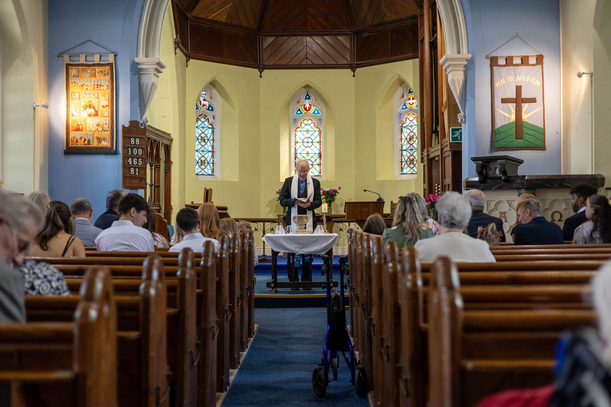
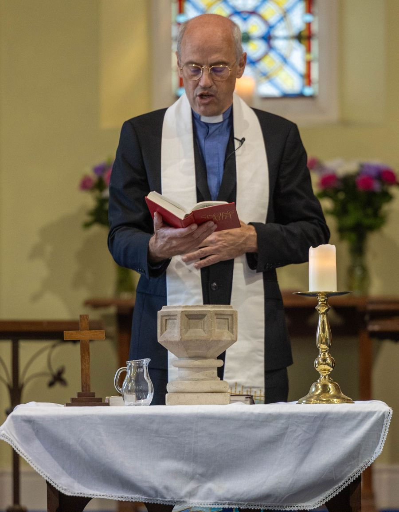
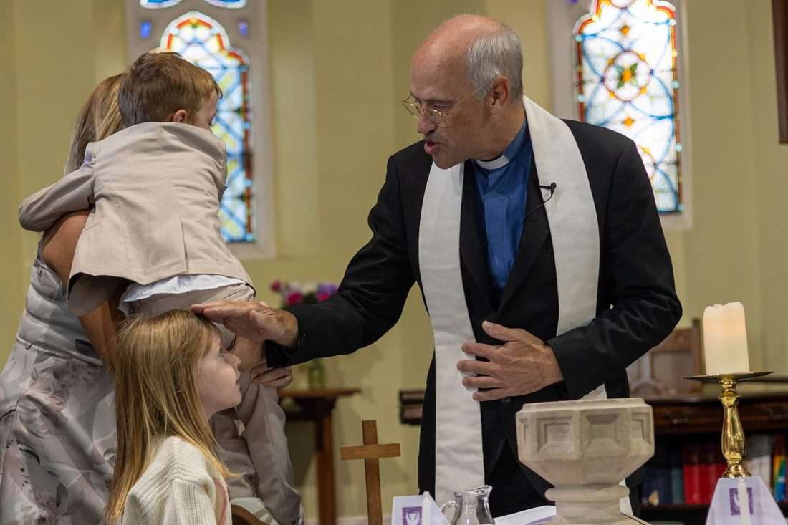
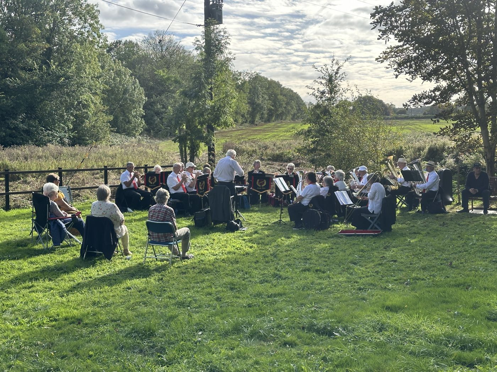
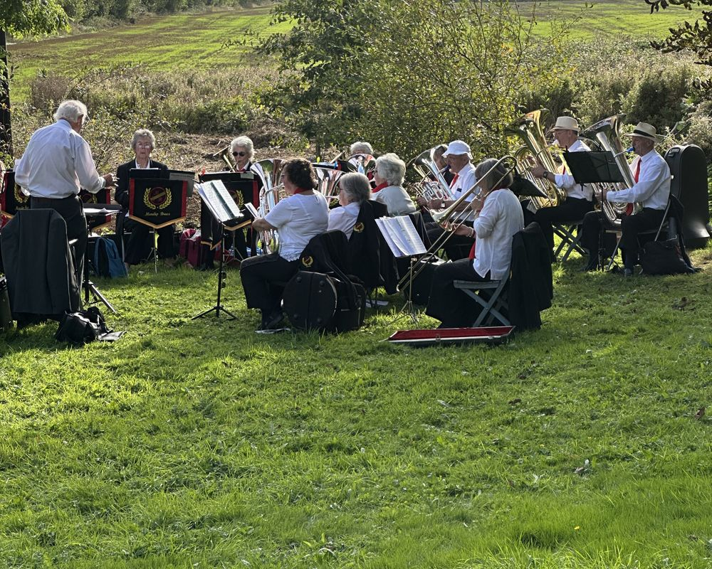
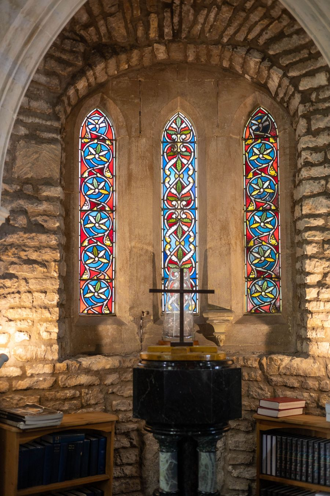
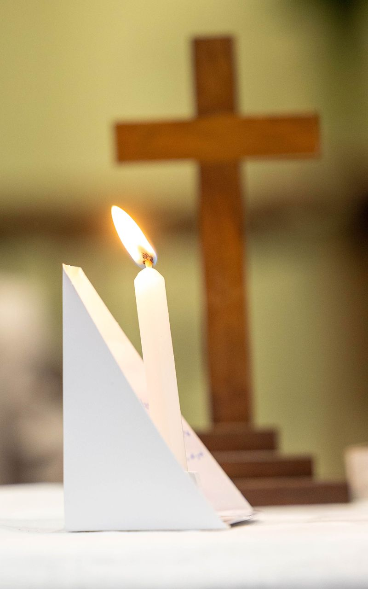

4Oct
Harvest Sunday
10.30am · Led by Lois Emm. Our harvest thanksgiving service.
Sunday
Stratton-on-the-Fosse · Somerset
We are a small, friendly church family who have met here since 1888. Join us for Sunday worship, come for a cuppa and a chat on a Wednesday, or simply sit a while in our garden.

Hymns, prayers, a Bible reading and a short talk. About an hour, then time for a chat.
Sunday 4 October: Harvest Sunday, led by Lois Emm
A cup of tea, a biscuit and a good chat until 12 noon. It isn’t a church service, just neighbours catching up on life and family. Free, with donations welcome if you’re able.
Just turn up · no need to book or pay
Ways to come in

What happens on a Sunday, where to park, and the questions people often ask before they come.
Your first visit →Every Wednesday morning the kettle is on. It’s not a religious event. People come to catch up, swap news about their families and put the world to rights. Everyone is welcome, churchgoer or not.
What’s on →
Our chapel and garden are a lovely setting for the big moments in life. We’d be glad to talk it through.
Weddings & baptisms →
Open to everyone
Beside and behind the chapel is a garden our members look after with great care. It is open to any visitor. Stop on a walk, bring a flask, sit on the bench and enjoy the view across the Mendip fields. You don’t need to ask.
If you’d like someone to pray with you or just to talk, ring us and we’ll find a time.
Our promise to visitors
A bit of history
Methodists have met at Norton Down since 1872. The chapel opened on 19 October 1888, on land given by William Beauchamp.
Many of the first members worked in the local coal mines or on the Beauchamp estate.
Read our story →Your first visit
Walking into a church for the first time can feel a bit daunting. We’re a small congregation of about 25 people, and we really are pleased to see a new face.
There’s free parking on the old road that runs around the chapel, right by the door. Arriving 10 minutes early gives you time to settle.
A steward will greet you, hand you a hymn book and help you find a seat. Sit wherever you like.
We sing traditional and newer hymns, pray, hear from the Bible and listen to a short talk. The service lasts about an hour.
Afterwards people stay and catch up. Stay as long as you like, or head off. Either is fine.
Ring Malcolm on 07966 434623 and we’ll make sure a friendly face is looking out for you.
What’s on
Everything is open to all. There’s no need to book unless we say so.
Sundays · 10.30am
Led by our minister or one of the Circuit’s local preachers. Around an hour, with time for a chat afterwards.
Wednesdays · 10.30am to 12 noon
Our friendliest morning of the week, and not a church service. Pop in for a cup of tea or coffee, a biscuit and a natter about life, family and whatever’s going on in the village. If you’re new to the area or on your own a lot, it’s an easy way to meet people. There’s no charge. Donations are welcome if you’re able, but never expected. Bring a friend or a neighbour.

Recently at Norton Down
In September, Mendip Brass played an afternoon concert on the chapel lawn. Neighbours brought chairs, sat in the sunshine and enjoyed the music with the fields behind.
Outdoor events like this are open to everyone. Keep an eye on this page, or ask at the Wednesday coffee morning, to hear about the next one.
10.30am · Led by Lois Emm. Our harvest thanksgiving service.
Monday evening · time to be confirmed. A shared harvest meal together. Everyone welcome.
10.30am · Led by Rev Margaret Crawshaw
10.30am · Led by members of our church
10.30am · Led by Rev Andrew Prout
10.30am · Led by Rupert Kaye. Remembering the work of MHA, the Methodist charity supporting older people.
10.30am · Led by Tricia Mugridge
10.30am · Led by Rev Jill Warren
10.30am · Led by Rev Andrew Prout
10.30am · Led by Rev Alistair Bolt. The start of Advent and the run-up to Christmas.
Dates for the coming months will be added soon. Sunday worship is at 10.30am every week.
Weddings, baptisms and funerals
Our chapel is popular for weddings and christenings, with a garden that makes a lovely backdrop for photographs. You don’t need to be a member to ask.

A small, beautiful chapel that seats a family-sized wedding, with the garden for photographs afterwards. Talk to Malcolm about dates and the legal steps.
A joyful way to welcome a child, or an adult, into God’s family. We’ll meet you first to explain what happens and plan the day together. To book one, ring Elaine Herbert, our baptism secretary, on 01761 412773.

When someone dies, our minister can lead a funeral or thanksgiving service here or elsewhere. Your funeral director can contact us, or you can ring us directly.
Ring Malcolm on 07966 434623, or send us a message and we’ll get back to you.
Our story
A chapel built by and for a working community, still open every week.
Local Methodists start meeting together in December 1872.
Norton Down Methodist Church opens on 19 October 1888. William Beauchamp gives the land and money to build it.
Electric lighting, central heating, indoor toilets and a kitchen are added.
A new roundabout at the busy A367 and B3139 crossroads raises the road, leaving the old road around the chapel for parking.
In September 2008 the church joins the Frome Circuit, later part of the Somerset Mendip Circuit.
We celebrate 150 years of Methodism at Norton Down.
Rev Andrew Prout arrives in September 2023. He also serves Frome Wesley, Coleford and Rode.
Many of the first members worked in the Somerset coalfield or on land owned by the Beauchamp family. The chapel was built for them and by them.
We’d love to hear from you, especially about weddings, anniversaries and Sunday school outings.
Get in touch →Find us and contact us
The easiest way to reach us is by phone. You can also email or send a message below.
Norton Down Methodist Church, Fosseway, Stratton-on-the-Fosse, Radstock, Somerset BA3 4QA. There is free parking on the old road beside the chapel. Open in Google Maps for directions